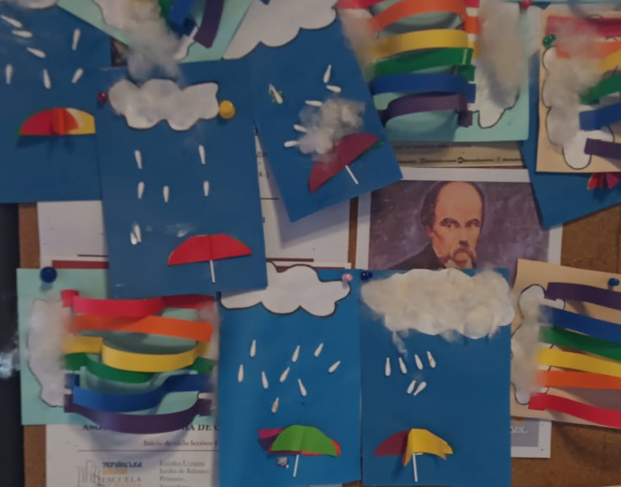
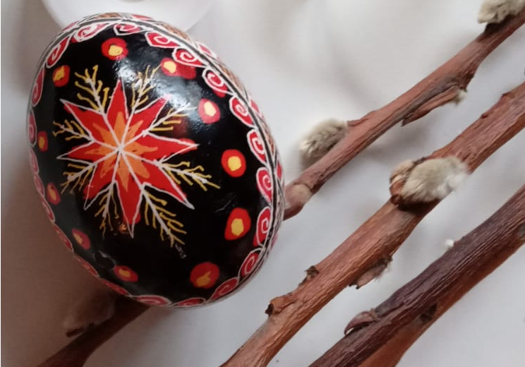

La Galería

Rupestre
Leonidas Peters nos brinda un testimonio fascinante de la creatividad humana y la conexión profunda con la naturaleza.

Futuro, pasado y pasado
En una una fascinante exploración de la temporalidad, Máximo nos invita a reflexionar sobre cómo el pasado y el futuro se entrelazan, influyendo en nuestra percepción del presente.

Sombras de color
Una obra cautivadora que explora la interacción entre luz, color y emoción. Alessandra invita al espectador a sumergirse en un mundo donde las sombras son elementos fundamentales que dan forma y profundidad a la experiencia estética.

Clavel del aire
La obra de Javier explora temas como la resiliencia, el amor y la búsqueda de identidad, utilizando las flores como metáfora de la adaptación y la libertad.
Setas
No es solo una representación visual; Joaquínnos invita a observar y apreciar las pequeñas maravillas que surgen en medio del caos urbano. En su sencillez, logra capturar un momento de belleza que puede pasar desapercibido, convirtiéndola en una obra memorable que resuena con el espectador.
Malvinas
En esta obra Mariela combina la tradición artística con una profunda carga simbólica y emocional. Sin dudas un vehículo para la exploración de la identidad cultural y la memoria colectiva.
Lego
La obra de Leonidas desafía las nociones tradicionales de la escultura al utilizar un medio que evoca la creatividad infantil y la innovación contemporánea.

Lluvia
En una impactante obra que combina elementos visuales potentes con una crítica social aguda. Màximo aborda temas de vulnerabilidad, violencia y la búsqueda de refugio en un mundo cada vez más caótico.

Estrella
La audaz simplicidad y su rica simbología. Un objeto tradicional, con el que Mariela logra captar la atención del espectador creando una pieza visualmente impactante.